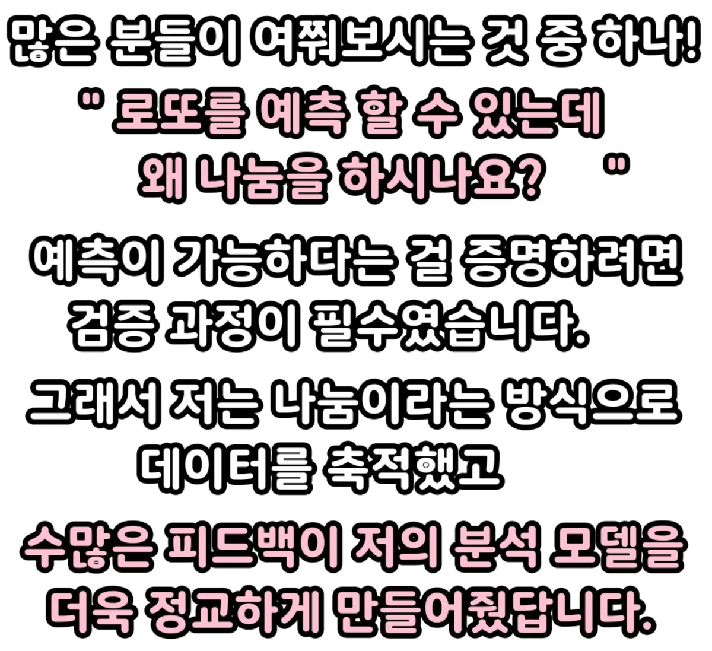
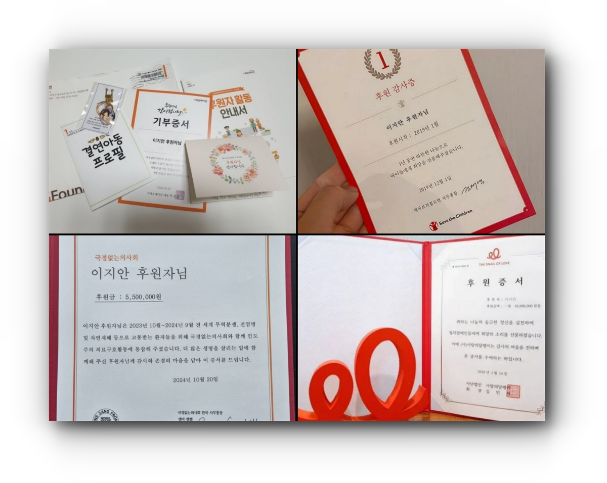
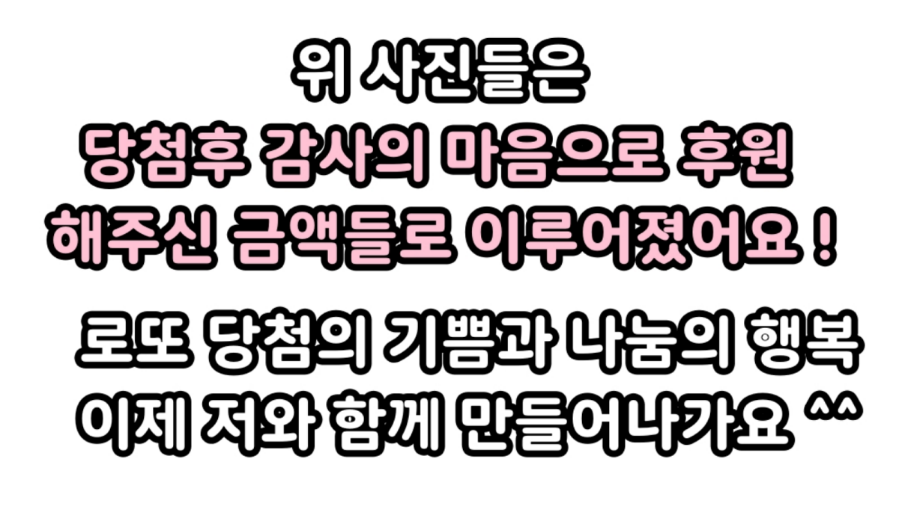
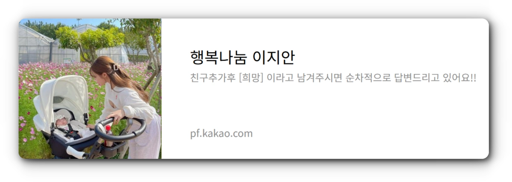
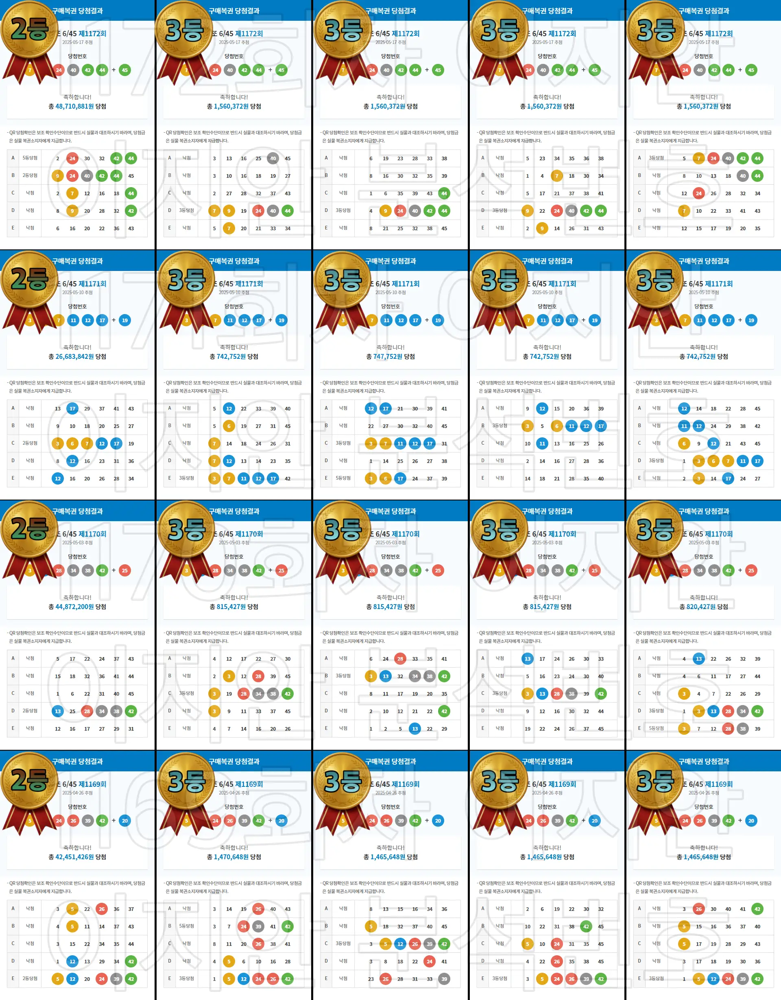

번호받기
이지안 소개
당첨 사진
FAQ
마감 임박 시간
아래 버튼을 누르시면
이지안이 어떤 사람인지
확인하실 수 있어요!
이지안 분석가
소개보기
  


자주 묻는 질문
정말 무료인가요?
네, 번호는 전부 무료로 드리고 있어요. 당첨되신 분들만 인증샷만 편하게 보내주시면 됩니다 😊
왜 이런 걸 나눠주시나요?
당첨의 기쁨도 함께 나누고, 결연 아동을 위한 후원도 함께 하자는 마음에서 시작했어요.
당첨되면 후원을 꼭 해야 하나요?
전혀 그런 건 없어요! 원하시는 분만 자유롭게 결연 후원에 동참해주시면 됩니다 💕
당첨된 분들도 있나요?
네! 실제로 당첨되신 분들 인증샷이 후기란에 많이 올라와 있어요. 한 번 확인해보시면 아실 거예요!